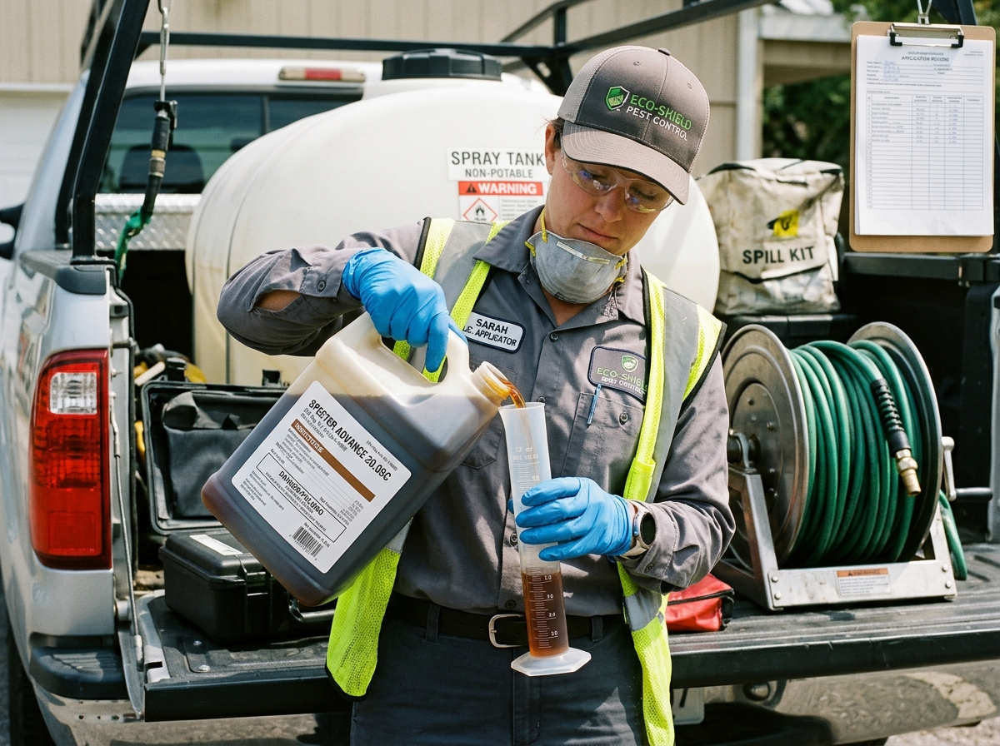
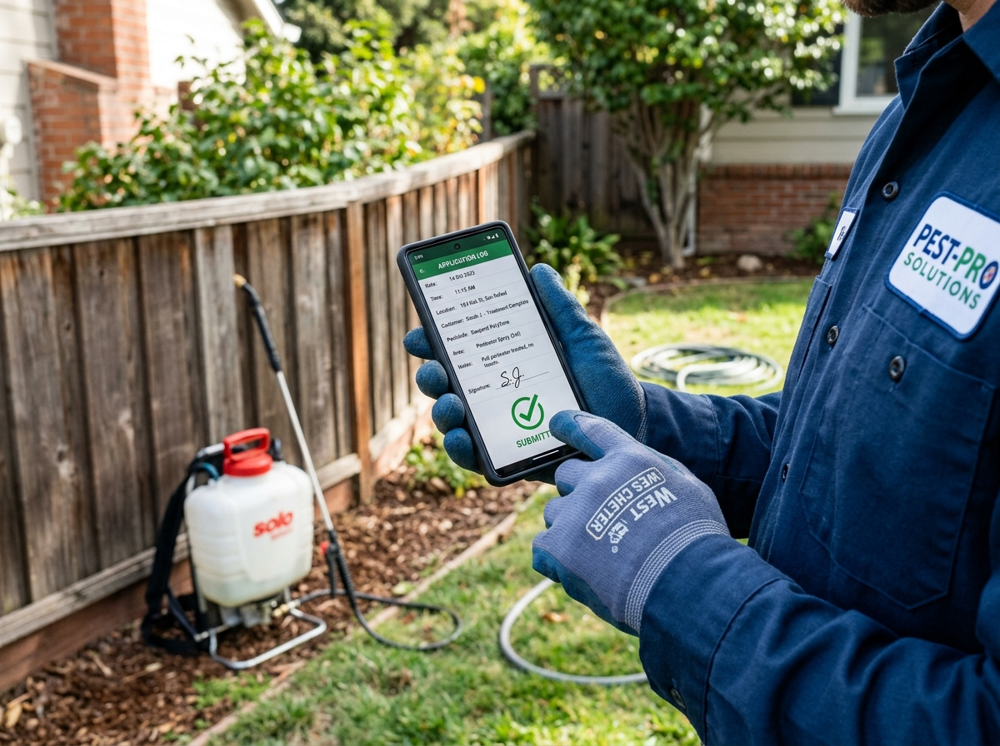
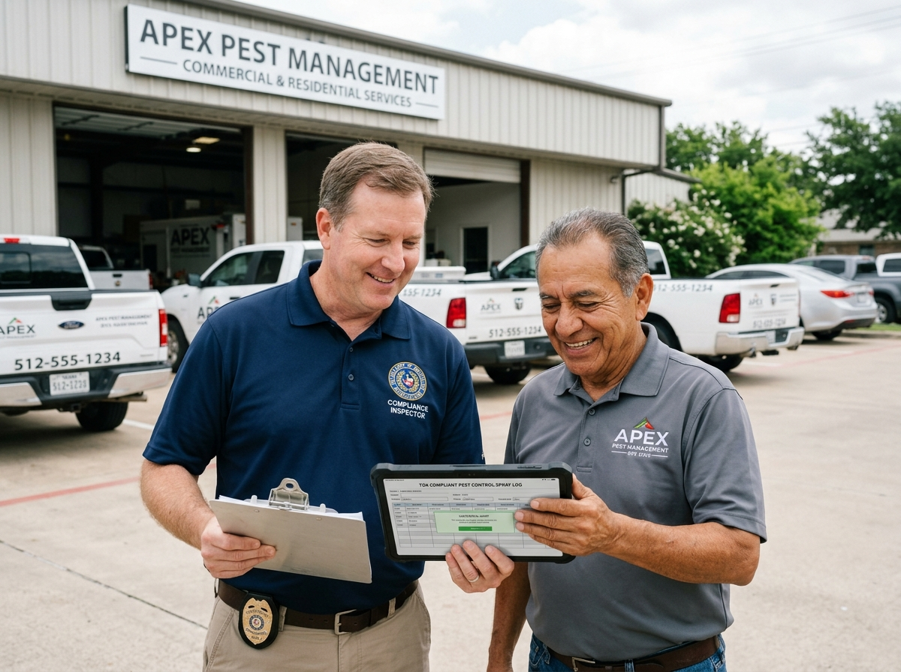

How Texas Pesticide Spray Logging Works in 3 Simple Steps
A simple 3-step compliance sidecar workflow for Texas licensed applicators in Austin, Dallas, and Houston.
Three Steps to Audit Immunity
No multi-week setup seminars or ERP overhauls. Your technicians start logging in minutes with their existing smartphones.

STEP 015-Minute Roster & Vault Setup
Enter your TDA applicator license numbers once. Select your active inventory from 40+ preloaded Texas EPA chemical formulations (Termidor SC, Taurus, Bifen I/T) with automatic EPA registration and dilution rates locked in.

STEP 0225-Second Rapid Field Log
Technicians tap on any smartphone or tablet at the job site. SprayComply auto-detects customer GPS, fetches verified NOAA wind direction/speed & temperature, and calculates exact chemical dilution ratios in 3 taps.

STEP 031-Click TDA Form Q527 Export
When a state agriculture inspector calls for a routine audit or unannounced spot check, filter by date range, applicator, or target pest, and instantly generate official certified Form Q527 audit PDFs with zero missing fields.
Keep your existing scheduling & invoicing. Replace only the paperwork headache.
You don't need to migrate your entire business into an expensive $400/month ERP just to have compliant spray logs. SprayComply runs side-by-side with Jobber, QuickBooks, Housecall Pro, or your existing paper routes.
How We Compare
See why small operators are switching to a dedicated sidecar tool.
| Feature | SprayComply | Paper Logs | PestPac | GorillaDesk |
|---|---|---|---|---|
| Auto-Weather Fetch | ||||
| TDA Audit PDF Export | Partial | Partial | ||
| Logging Speed | 25 Seconds | 5+ Minutes | 2-3 Minutes | 1-2 Minutes |
| Requires Full ERP Migration |
Frequently Asked Questions
Do I need to replace my scheduling software?
Not at all! SprayComply acts as a sidecar. You can continue using your current CRM or scheduling tool while using SprayComply solely for rapid chemical logging and compliance.
What if my technician goes to a rural area without internet?
SprayComply includes an offline mode. Technicians can log sprays without a connection, and the app will automatically sync to the cloud once they return to coverage.
Are the weather reports accurate?
Yes, we use the device's GPS to find the exact location and pull real-time wind speed, temperature, and direction directly from NOAA weather stations.
How long does setup take?
Most operators are set up and logging their first spray within 5 minutes. Since we pre-load Texas EPA chemicals, you just add your team and go.
Will the exported PDF pass a TDA audit?
Yes. Our PDF exports are specifically formatted to mimic the standard TDA Form Q527, containing all required fields for a seamless audit process.